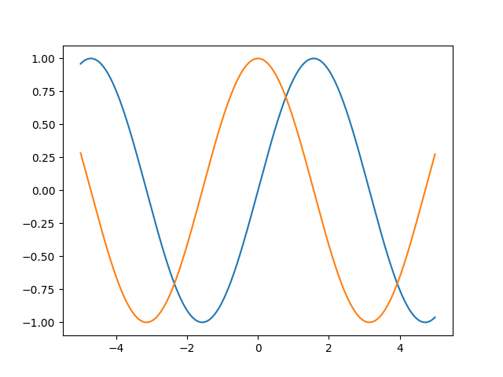

PaddlePaddle 自动求导
自动求导
在 PaddlePaddle 中使用自动求导来计算导数。
要求：$ f(x)=\sin{x} $,绘制 $f(x)$ 和 $\dfrac{\mathrm{d}f(x)}{\mathrm{d}x}$ 的图像，不能使用 $ f’(x)=\cos{x}$
in[1]
import paddle |
output[1]

API
backward
paddle.autograd.backward(tensors, grad_tensors=None, retain_graph=False)
计算给定的 Tensors 的反向梯度。
参数
- tensors (list[Tensor]) – 将要计算梯度的 Tensors 列表。Tensors 中不能包含有相同的 Tensor。
- grad_tensors (None|list[Tensor|None]，可选) – tensors 的初始梯度值。如果非 None，必须和 tensors 有相同的长度，并且如果其中某一 Tensor 元素为 None，则该初始梯度值为填充 1.0 的默认值；如果是 None，所有的 tensors 的初始梯度值为填充 1.0 的默认值。默认值：None。
- retain_graph (bool，可选) – 如果为 False，反向计算图将被释放。如果在 backward()之后继续添加 OP，需要设置为 True，此时之前的反向计算图会保留。将其设置为 False 会更加节省内存。默认值：False。
返回
None
代码示例
import paddle |
grad
paddle.grad(outputs, inputs, grad_outputs=None, retain_graph=None, create_graph=False, only_inputs=True, allow_unused=False, no_grad_vars=None)
对于每个 inputs，计算所有 outputs 相对于其的梯度和。
参数
- outputs (Tensor|list(Tensor)|tuple(Tensor)) – 用于计算梯度的图的输出变量，或多个输出变量构成的 list/tuple。
- inputs (Tensor|list(Tensor)|tuple(Tensor)) - 用于计算梯度的图的输入变量，或多个输入变量构成的 list/tuple。该 API 的每个返回值对应每个 inputs 的梯度。
- grad_outputs (Tensor|list(Tensor|None)|tuple(Tensor|None)，可选) - outputs 变量梯度的初始值。若 grad_outputs 为 None，则 outputs 梯度的初始值均为全 1 的 Tensor。若 grad_outputs 不为 None，它必须与 outputs 的长度相等，此时，若 grad_outputs 的第 i 个元素为 None，则第 i 个 outputs 的梯度初始值为全 1 的 Tensor；若 grad_outputs 的第 i 个元素为 Tensor，则第 i 个 outputs 的梯度初始值为 grad_outputs 的第 i 个元素。默认值为 None。
- retain_graph (bool，可选) - 是否保留计算梯度的前向图。若值为 True，则前向图会保留，用户可对同一张图求两次反向。若值为 False，则前向图会释放。默认值为 None，表示值与 create_graph 相等。
- create_graph (bool，可选) - 是否创建计算过程中的反向图。若值为 True，则可支持计算高阶导数。若值为 False，则计算过程中的反向图会释放。默认值为 False。
- only_inputs (bool，可选) - 是否只计算 inputs 的梯度。若值为 False，则图中所有叶节点变量的梯度均会计算，并进行累加。若值为 True，则只会计算 inputs 的梯度。默认值为 True。only_inputs=False 功能正在开发中，目前尚不支持。
- allow_unused (bool，可选) - 决定当某些 inputs 变量不在计算图中时抛出错误还是返回 None。若某些 inputs 变量不在计算图中（即它们的梯度为 None），则当 allowed_unused=False 时会抛出错误，当 allow_unused=True 时会返回 None 作为这些变量的梯度。默认值为 False。
- no_grad_vars (Tensor|list(Tensor)|tuple(Tensor)|set(Tensor)，可选) - 指明不需要计算梯度的变量。默认值为 None。
返回
tuple(Tensor)，其长度等于 inputs 中的变量个数，且第 i 个返回的变量是所有 outputs 相对于第 i 个 inputs 的梯度之和。
代码示例 1
import paddle |
代码示例 2
import paddle |
本博客所有文章除特别声明外，均采用 CC BY-NC-SA 4.0 许可协议。转载请注明来自 龙火火的个人博客！
 微信
微信 支付宝
支付宝
评论